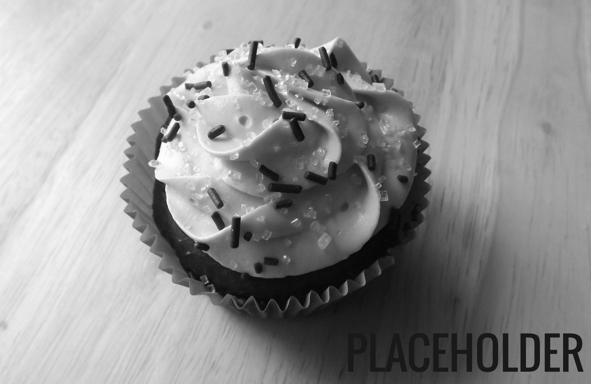

Custom cakes for every sweet tooth
A Little Spring in our Step
- 
-

-

What better way to get into spring than with a colourful baking spread. Vanilla cupcakes and marble cake are featured in this treat. Topped with bright green frogs to great everyone at the party.
Valentine's Day Sweets


Who wouldn't want to share the love with these classic bites. Red velvet Valentine's Day cupcakes topped with a delicious cream cheese icing and sprinkles with colour from side to side.
Violin Cake
Hearing music is one thing, tasting it is another. The violin cake is one of our most popular cakes and is one of our proudest works. Crafted with fondant on a decadent chocolate base, this cake was formed with patience and care and was an absolute hit.
The Entire Musical Experience
A party isn't a party without a little music and same can be said about food. Here we combined the best of both worlds, some musical fondant cupcakes topping some delightfully sweet vanilla cupcakes.